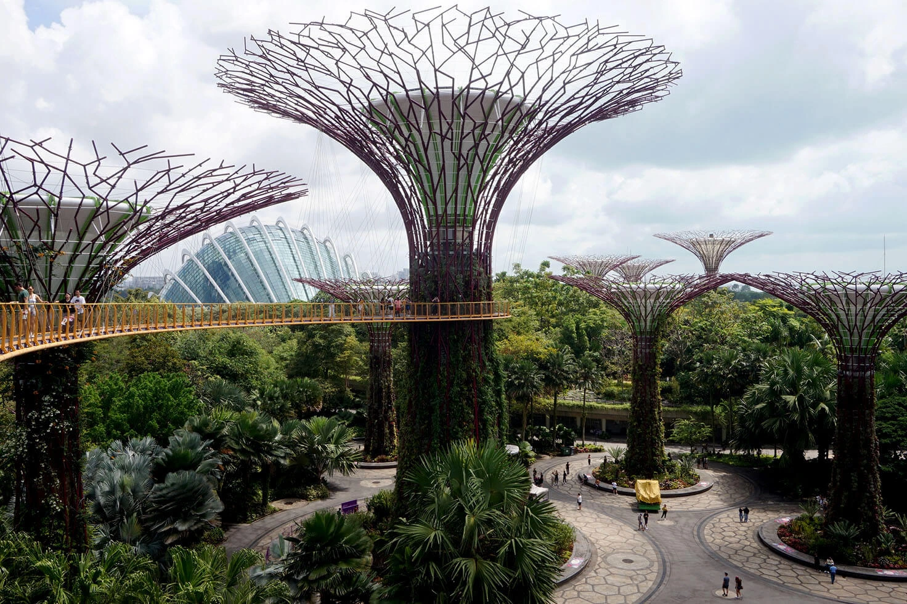

Singapur
El jardín fue inaugurado el .

El parque forma parte de las políticas de Gobierno por hacer de Singapur una "ciudad dentro de un jardín" con el objetivo inicial de "mejorar la calidad de vida junto a la flora y fauna" de la ciudad.